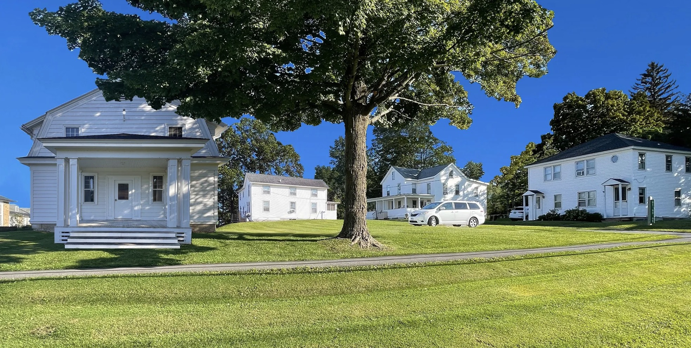
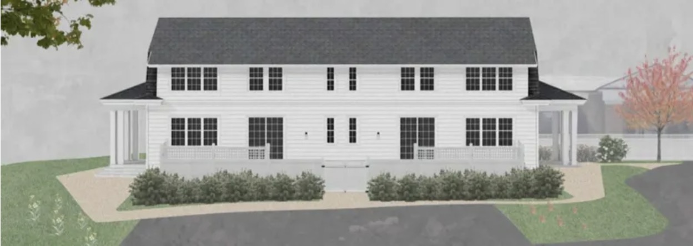

Use what Sharon already has. Make room for what comes next.
The Trust’s work takes three forms: preserve existing affordable homes, convert existing buildings for housing, and create new affordable homes. Together, these projects respond to local housing needs and keep affordability in view for the long term.


Featured work · North Main Street
Four buildings. Ten affordable rental homes planned.
The Trust bought 91, 93 and 95 North Main Street in 2023. The buildings had long provided affordable rental housing, and renovations were needed. In 2025, the Trust expanded its plans to include the former community center at 99 North Main Street.
The Trust’s project page says a $2 million Connecticut Department of Housing grant closed in late 2025. Together with support from local foundations and individuals, the Trust plans a renovated campus of four buildings and ten affordable rental apartments.
Existing North Main Street homes and a proposed view of 99 North Main Street
Proposed reuse of the former Sharon community center
Convert an existing building
99 North Main Street
The former Sharon community center is in the process of conversion into four affordable rental apartments. The project page describes four two-bedroom homes in the historic building.
The Trust is building a one-family home at 160 Silver Lake Shores Road and plans to sell it at an affordable price when complete. The October 2026 presentation describes the current plan as a sale to qualified individuals at 100% of Area Median Income.